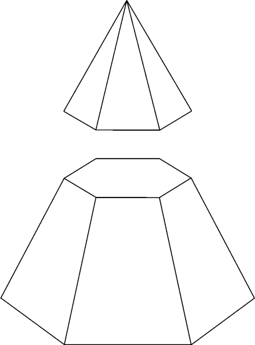

Círculo
Praticar o uso da constante π (pi) e a potenciação
-
Calcular
Tronco da pirâmide
É o solido formado por uma secção transversal, paralela à base, com faces laterais trapezoidais e bases poligonais
-
Calcular
Retângulo

Semelhante ao quadrado, mas com lados diferentes
-
Calcular
Coroa do Círculo

Quando duas ou mais circunferências possuem o mesmo centro, são denominadas concêntricas. Nesse caso elas podem ter raio de tamanhos diferentes.
-
Calcular
Trapezoide Irregular

onde os quatro lados têm diferentes comprimentos.
-
Calcular
Polígono Regular com N Lados

Um polígono é regular quando é convexo e possui todos os lados e ângulos de mesma medida. Por isso um polígono regular é
equilátero, pois todos os lados são de mesmo comprimento, e equiângulo, visto que todos os ângulos possuem a mesma medida.
-
Calcular
Quadrado
O quadrado é um polígono de quatro lados. Os quatro lados de um quadrado são congruentes e os quatro ângulos medem 90°.
-
Calcular
Setor Circular em um Círculo Alinhado

A área do setor circular é a região interna da circunferência, limitada por dois raios e um arco de círculo. A área do setor circular é como uma fatia da circunferência.
-
Calcular